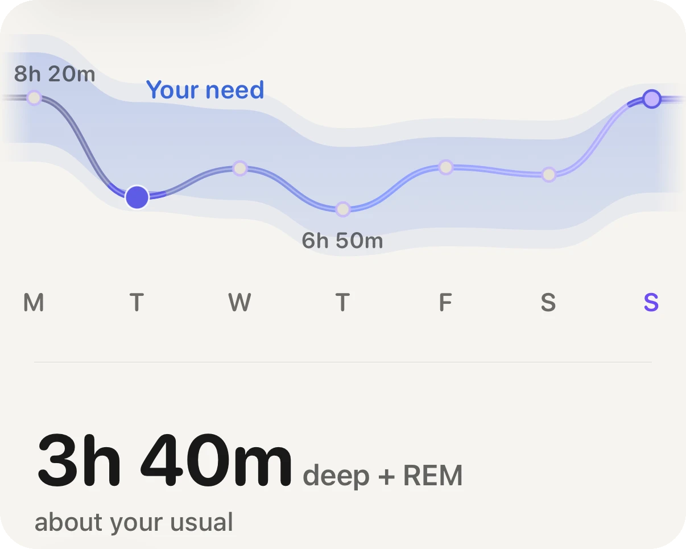

Concept · Sleep

Most adults need about 7 to 9 hours, and you need a number that is yours. Expert panels give a band, not a target, and the same band hides people who feel fine on less and people who need every minute of it. The way to find yours is to watch your own settled nights, not to copy a poster.
A joint statement from the American Academy of Sleep Medicine and the Sleep Research Society (Watson and colleagues, 2015) recommends that adults regularly sleep 7 or more hours a night for good health. The National Sleep Foundation panel (Hirshkowitz and colleagues, 2015) frames the same adult band as roughly 7 to 9 hours, with the edges shifting with age. Both say it as a range because the evidence does not support one number for everybody.
Part of the spread is written into people. Shi and colleagues (2019) described a rare gene variant that lets carriers feel fully rested on much less sleep than most. Most of us do not have it, but it shows that need is not one setting for the whole population.
More is not automatically better either. In a review of prospective studies, Cappuccio and colleagues (2010) found that both short and long sleep went with higher death rates in large groups. That is a pattern across groups, not a verdict on your body, and long sleep can be a sign of something else rather than a cause.
In a large prospective cohort, Windred and colleagues (2024) found that how regular people's sleep was predicted mortality risk better than how long they slept. Going to bed and getting up at similar times is not a soft tip. It is a signal strong enough to outrank the hour count in that study. If your sleep is short on Monday and long on Saturday, the average hides the thing that matters.
Watches estimate sleep from movement and heart signals. Duration and timing are the dependable parts. The stage ribbon (deep, REM, light) is the least exact part, and deep sleep is the hardest for any wrist to call.
Aera, for iPhone and Apple Watch
Aera reads the sleep that reaches Apple Health, from an Apple Watch or another tracker that writes to it, and learns your need from the middle of your own nights over the last eight weeks, never below seven hours, instead of assuming eight. Until it has four weeks of nights, it uses a target you set. Each night is shown against that need, with how regular your timing has been. Tap the number and the Field Guide explains how it was worked out and where a wrist estimate stops being reliable. No account, and the numbers are worked out on your iPhone.
Aera is not a medical device.
Most adults do best on 7 to 9 hours, and expert groups advise at least 7. Your own need sits somewhere in that band and is best found from your own settled nights.
For some people it is, but for most adults it is below the advised minimum of 7 hours. If you feel clear all day for weeks on 6, that tells you something. If you need caffeine and an alarm to function, it probably is not enough.
Yes. In one large cohort (Windred and colleagues, 2024) regular sleep timing predicted mortality risk better than sleep duration did.
Total sleep time and timing are reasonable estimates. Sleep stages are the weakest part, so trust duration and regularity more than the stage chart.
Related guide: What is a good sleep score on Apple Watch? · field note: how much sleep you actually need